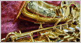
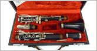
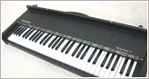

ギターやベースなど弦楽器や鍵盤楽器、フルートなど金管、木管楽器や打楽器、録音機材など幅広くお買取しています。

| 最も重要なポイントはコンディション。コンディションにより査定は上下します。楽器にダメージが無いか。ヒビ（クラック）、や打痕などや塗装のはげなど。電子機器は発音やボタンやつまみ等に不具合は無いか。使用に致命的なダメージはお買取が難しくなります。逆に綺麗で動作良好であれば査定はUPします！ |  |

| 付属品の有無で査定が上下する場合があります。例えばハードケースや保証書、ACアダプターです。 |  |

| 年式はあまり関係ないケースが多いので、古い楽器でも人気があれば高額査定になる場合があります。 |  |

【弦楽器取扱品目】
| エレキギター | エレキベース ウッドベース アコースティックギター | クラシックギター |
| ビンテージギター | コントラバス | バイオリン |
| アコースティックギター | エレキベース | シタール |
| バンジョー | ウクレレ | 三味線 |
| 琴 | その他 |
【弦楽器メーカー】
| MARTIN（マーティン） | Gibson(ギブソン） | YAMAHA（ヤマハ） |
| ヤイリギター | MORRIS（モーリス） | OVATION（オベーション） |
| タカミネ | CRAFTAR(クラフター） | ARIA（アリア） |
| Fender（フェンダー） | TOKAI | リッケンバッカー |
| ミュージックマン | バッカス | ワーウイック |
| エピフォン | ESP | アイバニーズ |
| フェルナンデス | グレコ | グレッチ |
| YAMAHA（ヤマハ） | KORG（コルグ） | KAWAI（カワイ） |
| CASIO（カシオ） | Technics（テクニクス） | Roland（ローランド） |
| 河野 賢 | 中出敏彦 | karl_hofnerカールフェフナー |
| アントン プレル | スズキ | ウエルナー |
| ゼムリンガ | ベヒレ | グレーセル |
| ゾマー | シュトア | ミューラー |
| ローベ | カールヘフナー | キルシュネック |
| ザンドナー |
【管楽器取扱品目】
| トランペット | サックス | トロンボーン |
| フルート | クラリネット | ホルン |
| チューバ | その他 |
【管楽器メーカー】
| ヤマハ | セルマー | ヤナギザワ |
| カイルベルト | ムラマツ | ミヤザワ |
| パール | クランポン | ルブラン |
| ｉｏ | マリゴー | バック |
| XO | コーン | キング |
| ホルトン | ベッソン | アレキサンダー |
| ハンスホイヤー | B&G | ジュピター |
【鍵盤楽器取扱品目】
| シンセサイザー | 電子ピアノ | キーボード |
| アコーディオン | その他 |
【鍵盤楽器メーカー】
| access(アクセス) | AKAI（アカイ） | ALESIS (アレシス)） |
| Clavia(クラヴィア) | CreamWare（クリーム・ウェア） | Dave Smith Instrument(デイブスミス) |
| EDIROL(エディロール) | FUTURERETRO（フューチャーレトロ） | HAMMOND（ハモンド） |
| KORG(コルグ) | Manikin Electronic（マニキン・エレクトロニック） | MOOG MUSIC(ムーグ) |
| ROGER LINN DESIGN ( ロジャーリンデザイン ) | Roland（ローランド） | WALDORF（ウォルドーフ） |
| YAMAHA(ヤマハ) | ZOOM(ズーム) | その他ノベーションなどMIDI関連メーカー |
【打楽器、機材など取扱品目】
| 打楽器（ドラム・パーカッション関連など） | DJ VJ機器（ターンテーブル・DJミキサー・CDJなど） | DTM・MIDI関連機器 |
| PA機器（モニター・ミキサー・サウンドシステム） | 高級オーディオ パワーアンプ | スピーカー |
| その他 |
【打楽器、機材メーカー】
| アカイ プロフェッショナル（AKAI professional） | アギュラー（Aguilar） | アレキサンダー（Alexander） |
| RME | アンペグ（Ampeg） | ヴァンザンド（Vanzandt） |
| エヴァンス（EVANS） | カシオ（Casio） | ギルド（GUILD） |
| クラビア（Clavia） | コルグ（KORG） | サドウスキー（Sadowsky） |
| G&L | ジルジャン（Zildjian） | スタインウェイ（Steinway & Sons） |
| スリンガーランド（Slingerland） | ソナー（SONOR） | Zon |
| Moon | tune | ノベーション（Novation） |
| クノーレン（Knooren） | パイステ（PAiSTE） | パール（Pearl） |
| フェンダー（Fender） | プロツールス（Pro Tools/digidesign） | マーシャル（Marshall） |
| マーティン（Martin） | マッキー（MACKIE） | ミュージックマン（MUSICMAN） |
| メサブギー（MESA BOOGIE） | ヤマハ（YAMAHA） | ラディック（Ludwig） |
| リッケンバッカー（Rickenbacker） | ロジャース（ROGERS DRUMS） | ローランド（ROLAND） |
| ワーウィック（Warwick） | ウォル（Wal） | TAMA（タマ） |
| パール | その他 |
【DJ機器メーカー】
| オルトフォン（ortofon） | スタントン（stanton） | ソニー（sony） |
| テクニクス（Technics） | ヌマーク（Numark） | パイオニア（Pioneer） |
| フォステクス（FOSTEX） | ブルールーム（BLUE ROOM） | ベスタクス（Vestax） |
| リンプロダクツ（LINN JAPAN） | その他 |